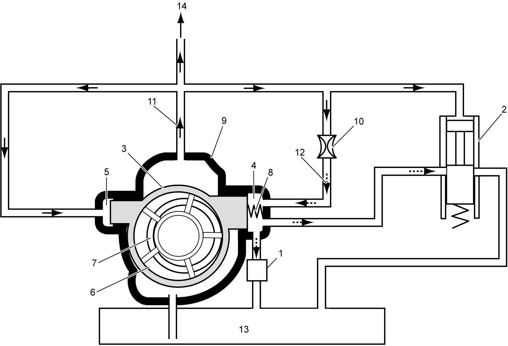
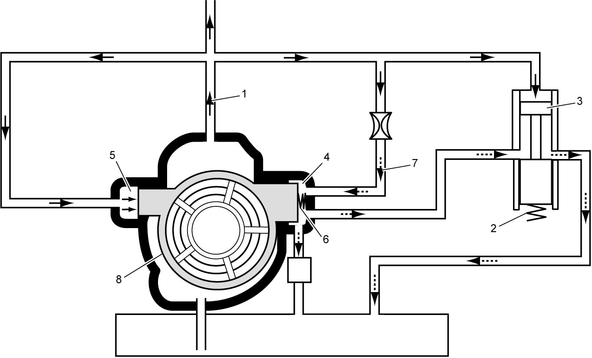
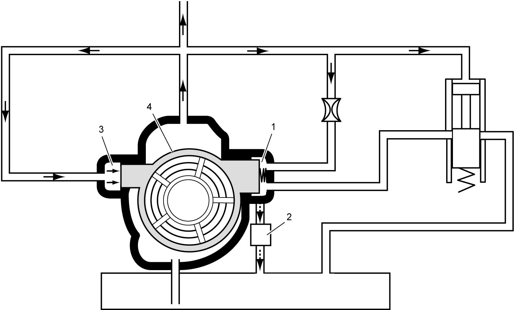
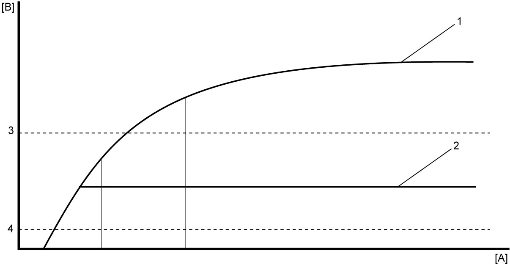

1E
| VDOP System Description |
VDOP (Variable displacement oil pump) system consists of a vane-type variable displacement oil pump, VDOP solenoid valve (1), oil pressure switch-1 and -2, a relief valve (2), a relief valve spring and ECM. The VDOP system reduces the torque required to drive the pump by controlling the maximum output of the oil pump in two pressure stages, at low load range and the other range.
Oil Pump
The variable displacement oil pump consists of a control ring (3), a chamber A (4), a chamber B (5), a vane (6), a rotor (7), a chamber spring (8) and a case (9).
At engine stop, the control ring is positioned on the left in figure below. After the engine starts, oil pump capacity changes in accordance with movement of the control ring. When the eccentricity between the rotor and the control ring increases, the oil pump capacity increases, and when the eccentricity decreases, the oil pump capacity also decreases.
System Function
The relief valve or VDOP solenoid valve releases the pressure in the oil pressure chamber A (P2) to control the movement of the control ring.
Oil pressure P1 is applied to chamber B, while oil pressure P2 as well as the chamber spring force is applied to chamber A. In this condition, the control ring is positioned on the left.

 "Expand image")
| 10. | Orifice | 12. | Oil pressure P2 | 14. | To engine lubrication |
| 11. | Oil pressure P1 | 13. | Oil pan |
Mechanical Oil Pressure Control
When the output oil pressure P1 (1) exceeds a specified value, and exceeds the spring force of the relief valve spring (2), the relief valve (3) opens to release the oil pressure in chamber A (4). As the oil pressure in chamber A decreases and the pressure in chamber B (5) exceeds the chamber spring force (6) and pressure P2 (7), the control ring (8) moves to the right in figure below. Accordingly, the oil pump capacity decreases and the oil pressure increase is limited and controlled oil pressure remains HIGH.

 "Expand image")
Electrical Oil Pressure Control
When the ECM determines that high pressure is not required, it releases the pressure in chamber A (1) by opening the VDOP solenoid valve (2). As the oil pressure in chamber A decreases and the pressure in chamber B (3) exceeds the chamber spring force and pressure P2, the control ring (4) moves to the right. Accordingly, the oil pump capacity decreases and the oil pressure increase is limited and controlled oil pressure is LOW.

 "Expand image")
Oil Pressure Switch
Oil pressure switch-1 turns the oil pressure warning light on and off in the combination meter. Switching pressure level of oil pressure switch-2 is set higher than that of oil pressure switch-1. The ECM monitors proper operation of the VDOP solenoid valve and the oil pump based on the signal from oil pressure switch-2.

 "Expand image")
| [A]: | Engine speed | 1. | Oil pressure controlled by relief valve (HIGH) | 3. | Oil pressure switch 2 switching pressure |
| [B]: | Oil pressure | 2. | Oil pressure controlled by VDOP solenoid valve (LOW) | 4. | Oil pressure switch 1 switching pressure |